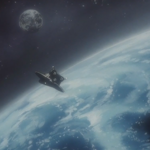
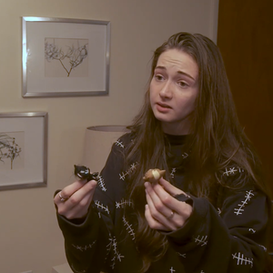
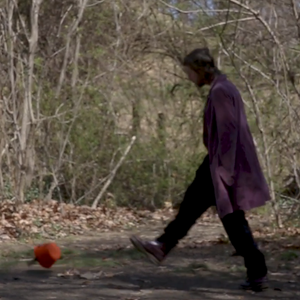

Video Editing
This page shows my projects that were mostly video editing rather than animation.
Cowboy Bebop AMV
This is an Anime Music Video made with clips from the show Cowboy Bebop. I made this to explore the style and because I love editing video and audio. AMVs have a lot of history behind them, so a large part of this project was also doing research to understand the style.
Runaways Short Film
This was a short film that I wrote, directed, and edited for a college class. It is weird and dingy but was a great learning experience for the editing process, especially working with a large group of other people.
Ghost Short Film
This was a short film that I wrote, co-directed, and edited for a college class. It was made with a very small group with very limited resources, and gave me a good understanding of working on large projects under challenging circumstances.
Destiny & Order
This was a project I work on with an artist I was friends with. I traced the backgrounds from existing images, and did all of the editing. I also organized the project and made sure it was on schedule over a month long period.